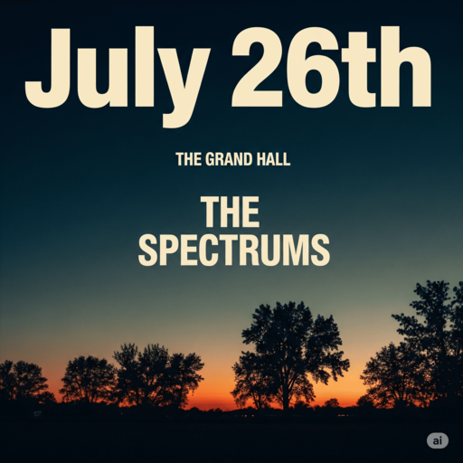
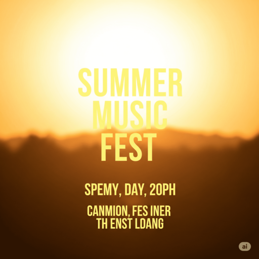
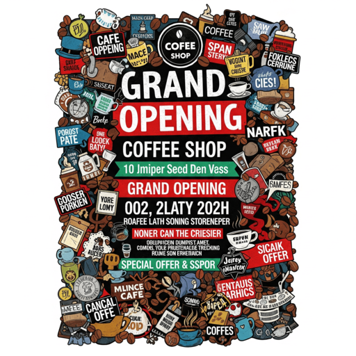
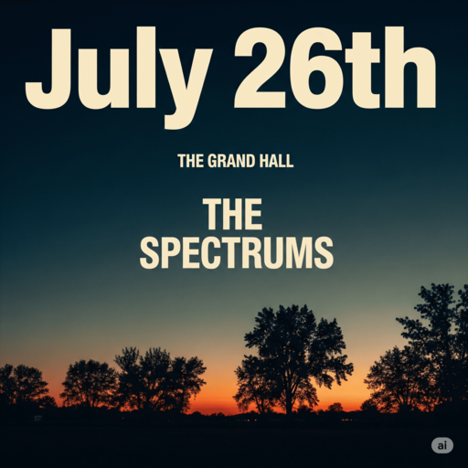
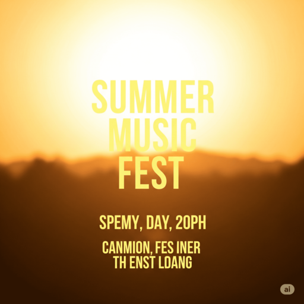
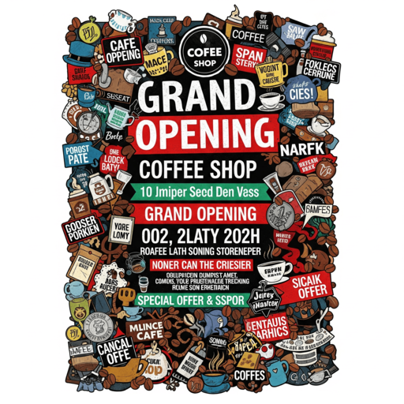

1. Prinsip apa yang paling diabaikan pada poster ini?
2. Apa masalah utama pada desain berikut?
3. Poster ini terasa sangat sesak dan sulit dibaca. Prinsip apa yang kurang diterapkan?
Buktikan Anda sudah menguasai dasar-dasar komposisi visual!
1. Prinsip apa yang paling diabaikan pada poster ini?
2. Apa masalah utama pada desain berikut?
3. Poster ini terasa sangat sesak dan sulit dibaca. Prinsip apa yang kurang diterapkan?
